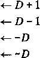

Assume initially that %dh
movb %dh > %al
movsbl %dh,%eax
movzbl %dh,%eax
例子中都是将寄存器 ％eax 的低位字节设置成 ％edx 的第二个字节。 movb 指令不改变其他 三个字节。 4 艮据源字节的最高位 ，movsbl 指令将其他三个字节设为全 1 或全 0。movzbl 指令 无论如何都是将其他三个字节设为全 0 。
.最后两个数据传送操作可以将数据压入程序栈中，以及从程序栈中弹出数据。正如我们将看 到的，栈在处理过程调用中起到至关重要的作用。栈是一个数据结构,可以添加或者删除值，不 过要遵循“后进先出”的原则。通过操作把数据压入栈中，通过/70/7操作删除数据；它具 有一个属性：弹出的值永远是最近被压入而仍然在桟中的值。栈可以实现为一个数组，总是从数 组的一端插入和删除元素。这一端称为栈顶。在IA32中，程序栈存放在存储器中某个区域。如 图3-5所示，栈向下增长，这样一来，栈顶元素的地址是所有栈中元素地址中最低的。（根据惯 例，我们的栈是倒过来画的，栈顶”在图的底部。）栈指针％esp保存着栈顶元素的地址。
最初
0 / 0 eax |
0x123 |
%edx |
0 |
%esp |
0x108 |
pushl %eax
%eax |
0x123 |
°/ 0 edx |
0 |
%esp |
0x104 |
popl %edx
%eax |
0x123 |
%edx |
0x123 |
%esp |
0x108 |
栈“底”
找“底”
桟“底”
0x108
• |
• |
• |
||
• |
• |
|||
籲 |
• |
• |
||
0x108 |
0x108 |
J:::::',: |
||
栈“顶” |
0x104 |
0x123 |
0x123 |
栈“顶”
栈“顶” _
图3-5栈操作说明。根据惯例，我们的栈是倒过来画的，因而栈“顶”在底部。IA32的栈向低地址 方向增长，所以压栈是减小栈指针（寄存器％6叩）的值，并将数据存放到存储器中，而出栈 是从存储器中读，并增加找指针的值
址大
地增
pushl指令的功能是把数据压入到栈上，而popl指令是弹出数据。这些指令都只有一个 操作数一~压入的数据源和弹出的数据目的。
将一个双字值压入栈中，首先要将找指针减4,然后将值写到新的栈顶地址。因此，指令 pushl %ebp的行为等价于以下两条指令：
subl $4,%esp movl %ebp,(%esp)
Decrement stack pointer Store %ebp on stack
它们之间的区别是在目标代码中pushl指令编码为1个字节，而上面两条指令一共需要6个字
节。图3-5中前两栏所示的是，当％63?为0x108, %eax为0x123时，执行指令pushl %eax 的效果。首先％esp会减4,得到0x104，然后会将0x123存放到存储器地址0x104处。
弹出一个双字的操作包括从栈顶位置读出数据，然后将栈指针加4。因此，指令popl %eax等价于以下这两条指令：
movl (%esp) ,°/ 0 eax addl $4,%esp
Read %ea.x from stack Increment stack pointer
图3-5的第三栏说明的是在执行完pushl后立即执行指令popl %edx的效果。先从存储 器中读出值0x123，再写到寄存器％edx中，然后，寄存器％esp的值将增加回到0x108。如 图所示，值0x123仍然会保持在存储器位置0x104中，直到被覆盖（例如被另一条入栈操作覆 盖)。无论如何，％es P 指向的地址总是栈顶。任何存储在栈顶之外的数据都被认为是无效的。
因为栈和程序代码以及其他形式的_序数据都是放在同样的存储器中，所以程序可以用标 准的存储器寻址方法访问栈内任意位置。例如，假设栈顶元素是双字，指# 111(^1 4(%esp), ^办会将第二个双字从栈中复制到寄存器 ％ edx 。
®练习题3.2对于下面汇编代码的每一行，根据操作数，确定适当的指令后缀。（例如，mov可以被重 写成 movb、movw 或者 movl。）
mov %eax, (%esp)
mov (%eax), %dx
mov $0xFF, %bl
mov (%esp,%edx,4), %dh
push $0xFF
mov %dx, (%eax)
pop %edi
@练习题3.3当我们调用汇编器的时候，下面代码的每一行都会产生一个错误消息。解释每一行都是 哪里出了错。
movb $0xF, (%bl)
movl %ax, (%esp)
movw (%eax),4(%esp)
A movb %ah,%sh
movl %eax,$0x123
movl %eax,%dx
movb %si, 8(%ebp)
3.4.3数据传送示例
作为一个使用数据传送指令的代码示例,考虑图3-6中所示的数据交换函数，既有C代码， 也有GCC产生的汇编代码。我们省略了一部分汇编代码 ， 这些代码用来在程序入口处为运行时 栈分配空间，以及在过程返回前回收栈空间的代码。当我们讨论过程链接时，会讲到这种建立和 完成代码的细节。除此之外剩下的代码，我们称之为“过程体”（body)。
1 int exchange(int *xp, int y) |
xp at %ebp-f-8, y at %ebp+12 |
|
2 { |
1 movl 8(%ebp), °/ 0 edx Get xp |
|
3 int x = *xp; |
By copying to 7«eax below, x becomes the return value |
|
4 |
2 movl (%edx), %eax Get x at xp |
|
5 *xp = y; |
3 movl 12(%ebp), %ecx Get y |
|
return x; > |
4 movl %ecx, (%edx) Store y at xp |
a) C语言代码 b)汇编代码
图3-6 exchange函数体的C语言和汇编代码。省略了栈的建立和完成部分
给C语言初学者：一些指针的示例
函数exchange (图3-6)提供了一个关于C语言中指针使用的很好说明。参数xp是一个 指向整数的指针，而y是一个整数。语句
int x = *xp;
表示我们将读存储在xp所指位置中的值，并将它存放到名字为X的局部变量中。这个读操作称 为指针的间接引用（dereferencing), C操作符*执行指针的间接引用。
语句
*xp = y;
正好相反——它将参数y的值写到xp所指的位置。这也是一种指针间接引用的形式（所以有操 作符*)，但是它表明的是一个写操作，因为它是在赋值语句的左边。
下面是一个调用exchange的实际例子：
int a = 4;
int b = exchange(&a, 3); printf("a = %d, b = %d\n" , a, b);
这段代码会打印出：
a = 3, b = 4
C操作符& (称为“取址”操作符）创建一个指针 ， 在本例中，该指针指向保存局部变量a的位 置。然后，函数exchange将用3覆盖存储在a中的值，但是返回4作为函数的值。注意如何 将指针传递给exchange,它能修改存在某个远处位置的数据。
当过程体开始执行时，过程参数xp和y存储在相对于寄存器％eb P 中地址值偏移8和12 的地方。指令1和2从存储器当中读出参数xp,把它存放到寄存器％edx中。指令2使用寄 存器％edx,并将x读到寄存器％eax中，直接实现了 C程序中的操作x=*x P 。稍后，用寄存 器％63<从这个函数返回一个值，因而返回值就是X 。 指令3将参数y加载到寄存器％ecx。然 后，指令4将这个值写入到寄存器％60^中的xp指向的存储器位置，直接实现了操作*x P =y。 这个例子说明了如何用MOV指令从存储器中读值到寄存器（指令1 〜 3 ),如何从寄存器写到 存储器（指令4)。
关于这段汇编代码有两点值得注意。首先，我们看到C语言中所谓的“指针”其实就是地 址。间接引用指针就是该指针放在一个寄存器中，然后在存储器引用中使用这个寄存器。其 次，像x这样的局部变量通常是保存在寄存器中，而不是存储器中。寄存器访问比存储器访问 要快得多。
®练习题3.4假设变量v* P 被声明为类型
src_t v; dest_t *p;
这里src_t和dest_t是用typedef声明的数据类型。我们想使用适当的数据传送指令来实现下面 的操作
*p = (dest_t) v;
此处，V存储在寄存器％eax适当命名的部分中（也就是％63%、％3乂或％31)，而指针p存储在寄存 器％edx中。
对于下列 src_t 和 dest_t 的组合，写一行汇编代码进行适当的数据传送。记住，在 C 语言 中，当执行既涉及大小变化又涉及符号改变的强制类型转换时,操作应该先改变符号（参见 2.2.6 节）。
src_t |
dest_t |
指令 |
int char ch ar unsigned char int unsigned unsigned |
int int unsigned int char unsigned char int |
movl %eax, (%edx) |
_练习题3.5巳知信息如下。将一个原型为 void decode1(int *xp, int *yp, int *zp);
的函数编译成汇编代码。代码体如下：
xp at yp at %ebp+12, zp at %ebp+16
movl 8(%ebp), %edi
movl 12(°/ 0 ebp), %edx
movl 16(°/ 0 ebp), %ecx
movl (%edx), %ebx
movl (%ecx)，°/ 0 esi
movl (%edi), %eax
movl %eax, (°/ 0 edx)
movl Xebx, (%ecx)
movl /iesi, (%edi)
参数xp、yp和zp分别存储在相对于寄存器％6bp中地址值的偏移8、12和16的地方。
请写出与以上汇编代码的decodel等效的C代码。
3.5 算术和逻辑操作
图3-7列出了一些整数和逻辑操作。大多数操作都分成了指令类 ， 这些指令类有各种带不同 大小操作数的变种。（只有leal没有其他大小的变种。）例如，指令类ADD由三条加法指令组 成：addb、addw和addl,分别是字节加法、字加法和双字加法。事实上，给出的每个指令类 都有对字节、字和双字数据进行操作的指令。这些操作被分为四组：加载有效地址、一元操作、 二元操作和移位。二元操作有两个操作数，而一元操作有一个操作数。这些操作数的描述方法与 3.4节中所讲的一样。
加载有效地址
加载有效地址（load effective address)指令leal实际上是movl指令的变形。它的指令形 式是从存储器读数据到寄存器，但实际上它根本就没有引用存储器。它的第一个操作数看上去是 一个存储器引用，但该指令并不是从指定的位置读入数据，而是将有效地址写入到目的操作数。 在图3-7中我们用C语言的地址操作符&S说明这种计算。这条指令可以为后面的存储器引用产 生指针。另外，它还可以简洁地描述普通的算术操作。例如，如果寄存器％edx的值为 X ,那么 指令leal 7 (%edx, %edx, 4) , %eax将设置寄存器％eax的值为 5 x + 7。编译器经常发现一些
leal的灵活用法，根本与有效地址计算无关。目的操作数必须是一个寄存器。
leal S, D
描述 加载有效地址
1 1负补 加减取取
D
D
D
D

INC D DEC D NEG D NOT D
加减乘异或与
D^-D + S D — D- S D ^ D* S D —D — S D<-D\ S D <r— D Sc S
ADD 5, D
SUB S, D
IMUL S, D
xor 5, D
or 5 ，D
AND 5 ，D
左移
左移（等同于SAL) 算术右移 逻辑右移
D — D«k D 一 D«k D <~ D k
D ^ 一 D k
SAL k, D SHL k，D SAR k, D
SHR k, D
图3-7整数算术操作。加载有效地址（leal)指令通常用来执行简单的算术操作。其余的指令是 非常标准的一元或二元操作。我们用>> A 和来分别表示算术右移和逻辑右移。注意，
这里的操作数顺序与ATT格式的汇编代码中的相反
练习题3.6假设寄存器％eax的值为x, %ecx的值为y。填写下表，指明下面每条汇编代码指令存 储在寄存器％edx中的值：
指 令 |
结 果 |
leal 6(%eax),%edx |
|
leal (%eax,%ecx),%edx |
|
leal (%eax, %ecx, 4),%edx |
|
leal 7(%eax,%eax,8),%edx |
|
leal OxA(,%eax,4),%edx |
|
leal 9(%eax,%ecx,2),%edx |
一元操作和二元操作
第二组中的操作是一元操作，它只有一个操作数，既是源又是目的。这个操作数可以是一 个寄存器，也可以是一个存储器位置。比如说，指令incl(%esp)会使栈顶的4字节元素加1。 这种语法让人想起C语言中的加1运算符(HH-)和减1运算法（--)。
第三组是二元操作，其中，第二个操作数既是源又是目的。这种语法让人想起C语言中 的赋值运算符，例如x+=y。不过，要注意，源操作数是第一个，目的操作数是第二个，对于 不可交换操作来说，这看上去很奇特。例如，指令subl %eax，％edx使寄存器％edx的值减 去％eax中的值。.(将指令解读成“从％edx中减去％eax”会有所帮助。）第一个操作数可以是 立即数、寄存器或是存储器位置。第二个操作数可以是寄存器或是存储器位置。不过,同movl 指令一样,两个操作数不能同时是存储器位置。
_练习题 3.7假设下面的值存放在指定的存储器地址和寄存器中：
地址 |
值 |
||
0x100 0x104 0x108 OxlOC |
OxFF OxAB 0x13 0x11 |
||
寄存器 |
值 |
||
°/ 0 eax %ecx %edx |
0x100 0x1 0x3 |
||
填写下表，给出下面指令的效果，说明将被更新的寄存器或存储器位置，以及得到的值。
指令 |
目的 |
值 |
addl %ecx, (%eax) |
||
subl %edx,4(%eax) |
||
imull $16, (%eax,%edx,4) |
||
incl 8(%eax) |
||
decl °/ 0 ecx |
||
subl %edx, %eax |
移位操作
最后一组是移位操作，先给出移位量，然后第二项给出的是要移位的位数。它可以进行算术 和逻辑右移。移位量用单个字节编码，因为只允许进行0到31位的移位（只考虑移位量的低5 位)。移位量可以是一个立即数，或者放在单字节寄存器元素％cl中。（这些指令很特别，因为 只允许以这个特定的寄存器作为操作数。）如图3-7所示，左移指令有两个名字：SAL和SHL。 两者的效果是一样的，都是将右边填上0。右移指令不同，SAR执行算术移位（填上符号位), 而SHR执行逻辑移位（填上0)。移位操作的目的操作数可以是一个寄存器或是一个存储器位 置。图3-7中用>> A (算术）和>\ (逻辑）来表示这两种不同的右移运算。
练习题 3.8假设我们想生成以下C函数的汇编代码：
int shift_left2_rightn(int x, int n)
{
x «= 2; x >>= n; return x;
} •
下面这段汇编代码执行实际的移位，并将最后的结果放在寄存器％eax中。此处省略了两条关键的指 令。参数x和n分别存放在存储器中相对于寄存器％ebp中地址偏移8和12的地方。
movl 8(°/ 0 ebp), %eax Get x
movl 12(%ebp), %ecx Get n
根据右边的注释，填出缺失的指令。请使用算术右移操作。
讨论
我们看到图3-7所示的大多数指令，既可以用于无符号运算，也可以用于补码运算。只有右 移操作要求区分有符号和无符号操作数。这个特性使得补码运算成为实现有符号整数运算的一种 比较好的方法。
图3-8给出了一个执行算术操作的函数示例，以及它的汇编代码。和前面一样，我们省略了 栈的建立和完成部分。函数参数x、y和z分别存放在存储器中相对于寄存器％ebp中地址偏移
f at °/ 0 ebp+6, y at %ebp+i2., z |
at %ebp-fi 6 |
|||
1 |
movl |
16(%ebp), %eax |
z |
|
2 |
leal |
(%eax,7 0 eax,2), |
°/ 0 eax z*3 |
|
3 |
sail |
$4, %eax |
t2 - |
z*48 |
4 |
movl |
12(°/ 0 ebp) , %edx |
y |
|
5 |
addl |
8(°/ 0 ebp) , 0 / 0 edx |
ti = |
x+y |
6 |
andl |
$65535, %edx |
t3 - |
tUOxFFFF |
7 |
imull |
%edx, %eax |
Return t4 - t2*t3 |
|
a) C语言代码 b)汇编代码
图3-8算术运算函数体的C语言和汇编代码。省略了栈的建立和完成部分
8、12和16的地方。
1 |
int |
arith (int x, |
|
2 |
int y, |
||
3 |
int z) |
||
4 |
{ |
||
5 |
int |
tl = x+y; |
|
6 |
int |
t2 = z*48; |
|
1 |
int |
t3 = tl & OxFFFF; |
|
8 |
int |
t4 = t2 * t3; |
|
9 |
return t4; |
||
10 |
} |
||
汇编代码指令与C语言源代码中的顺序不同。指令2和3用leal和移位指令的组合来实 现表达式zM8。第5行计算x+y的值。第6行计算tl和OxFFFF的AND值。指令7执行最 后的乘法。由于乘法的目的寄存器是％eax,函数会返回这个值。
图3-8的汇编代码中，寄存器％eax中的值先后对应于程序值z、3*z、zM8和t4 (作为 返回值)。通常，编译器产生的代码中，会用一个寄存器存放多个程序值，还会在寄存器之间传 送程序值。
练习题 3 . 9 图3-8a中函数有以下变种，有些表达式用空格替代：
1 int arith(int x,
|
2 |
int y, |
||
|
3 A _ |
r |
int z) |
|
|
5 |
I int |
tl |
= |
|
6 |
int |
t2 |
= |
|
7 |
int |
t3 |
= |
|
B |
int |
t4 |
二 |
|
9 |
return |
t4; |
|
io >
实现这些表达式对应的汇编代码如下：
x at %ebp+S, y at 7 0 ebp+12 f z at %ebp+i 6
movl 12(%ebp), %eax
xorl 8(%ebp), °/ 0 eax
sari $3, %eax
notl %eax
subl 16(°/ 0 ebp), %eax
基于这些汇编代码，填写C语言代码中缺失的部分。
_练习题3.10常常可以看见以下形式的汇编代码行：
xorl %edx,%edx
但是在产生这段汇编代码的C代码中，并没有出现EXCLUSIVE-OR操作。
解释这条特殊的EXCLUSIVE-OR指令的效果，它实现了什么有用的操作。
更直接表达这个操作的汇编代码是什么？
比较一下同样一个操作的两种不同实现的编码字节长度。 3.5.5特殊的算术操作
图3-9描述的指令支持产生两个32位数字的全64位乘积以及整数除法。
指令 |
效果 |
描述 |
imull S mull S |
R[%edx]:R[%eax] S x R[°/Jeax] R[%edx]:R[%eax] — S x R[%eax] |
有符号全64位乘法 无辟全64位乘法 |
cltd |
R[%edx]:R[%eax] SignExtend(R[°/ 0 eax]) |
转为四字 |
idivl S |
R[%edx] — R[%edx]:R[7 0 eax] mod S\ R[%eax] — R[°/oedx]:R[ 0 / 0 eax] + S |
有符号除法 |
divl S |
R[%edx] — R[%edx]:R[%eax] mod S; R[%eax] — R[%edx]:R[%eax] + S |
无符号除法 |
图3-9特殊的算术操作。这些操作提供了有符号和无符号数的全64位乘法和除法。
一对寄存器％edx和％eax组成一个64位的四字
图3-7中列出的imull指令称为“双操作数”乘法指令。它从两个32位操作数产生一个 32位乘积,实现了 2.3.4节和2.3.5节中描述的操作* 3 U 2 和*/ 2 。回想一下,将乘积截取为32位 时，无符号乘和补码乘的位级行为是一样的。IA32还提供了两个不同的“单操作数”乘法指令，
以计算两个32位值的全64位乘积 个是无符号数乘法（mull)，而另一个是补码乘法
(imull)。这两条指令都要求一个参数必须在寄存器％eax中，而另一个作为指令的源操作数给 出。然后乘积存放在寄存器％edx (高32位）和％^% (低32位）中。虽然imull这个名字可 以用于两个不同的乘法操作，但是汇编器能够通过计算操作数的数目，分辨出想用哪条指令。
举个例子，假设有符号数x和y存储在相对于％ebp偏移量为8和12的位置，我们希望将 它们的全64位乘积作为8个字节存放在栈顶。代码如下：
x at y^ebpt-S, y at %ebp+12
movl 12(°/,ebp), %eax Put y in °/ 6 ea:c
imull 8(%ebp) Multiply by x
movl %eax, (%esp) Store low-order 32 bits .
movl %edx, 4(%esp) Store high-oirder 32 bits
可以观察到，存储两个寄存器的位置对小端法机器来说是对的——寄存器％edx中的高位存 放在相对于％eax中的低位偏移量为4的地方。栈是向低地址方向增长的，也雜是说低位在栈顶。
我们前面的算术运算表（图3-7)没有列出除法或模操作。这些操作由#似于单操作数乘法 指令的单操作数除法指令提供。有符号除法指令idivl将寄存器％ed X (高32位）和％eax (低 32位）中的64位数作为被除数，而除数作为指令的操作数给出。指令将商存储在寄存器％eax 中，将余数存储在寄存器％edx中。
举个例子，假设有符号数x和y存储在相对于％ebp偏移量为8和12的位置，我们想要将 x/y和x%y存储到栈中。GCC产生的代码如下：
x at %ebp+S, 7 at %ebp+i2
|
1 |
movl |
8(°/ 0 ebp) , %edx |
Put x in %edx |
|
2 |
movl |
%edx, %eax |
Copy x to %eax |
|
3 |
sari |
$31, %edx |
Sign extend x in %edx |
|
4 |
idivl |
12(%ebp) |
Divide by y |
|
5 |
movl |
%eax, 4(°/ 0 esp) |
Store x / y |
|
6 |
movl |
%edx, (%esp) |
Store x X y |
第1行的传送指令和第3行的算术移位指令联合起来的效果，就是根据x的符号将寄存 器％edx设置为全零或者全一；而第2行的传送指令将x复制到％eax。因此，我们有了将靑存 器％edx和％eax联合起来存放x的64位符号扩展的版本。在idivl指令之后，商和余数&复 制到栈顶的两个位置（指令5和6)。
设置除数更常规的方法是使用cltd e 指令。这条指令将％eax符号扩展到％edx。使用这 条指令，上面所示的代码序列变成了以下形式：
x at %ehp^8, y at 12
Load x into %eax Sign extend into %edx Divide by y Store x / y Store x % y
movl 8(%ebp) ,°/ 0 eax
cltd
idivl 12(°/ 0 ebp) movl %eax, 4(%esp)
movl %edx, (%esp)
我们可以看到，这里的前两条指令与前面代码序列中的前三条指令有一样的整体效果。不同 的GCC版本会产生这两种不同的方式来设置整数除法的被除数。
无符号除法使用的是divl指令。通常会事先将寄存器%edx设置为0。
®练习题 3.11 修改有符号除法的汇编代码，使它计算数 x 和 y 的无符号商和余数，并将结果存放在栈上。 ®练习题 3.12 考虑下面的 C 函数原型，其中， num 一 t 是用 typedef 声明的数据类型。
void store_prod(num_t *dest, unsigned x, num_t y) {
*dest = x*y;
}
GCC产生以下汇编代码来实现计算的主体:
dest at %ebp+5 ，x at %ebp+i2, y at %ebpf-16 .
|
1 |
movl |
12( 0 / 0 ebp) , %eax |
|
2 |
movl |
20(%ebp), %ecx |
|
3 |
imull |
%eax, %ecx |
|
4 |
mull |
16(°/ 0 ebp) |
|
5 |
leal |
(%ecx,%edx), %edx |
|
6 |
movl |
8(%ebp), %ecx |
|
7 |
movl |
%eax, (%ecx) |
|
8 |
movl |
%edx, 4(%ecx) |
可以看到，这段代码需要读两次内存来取参数y (第2行和第4行），两个乘法（第3行和第4行）, 以及两次内存写来存储结果（第7行和第8行)。
num_t是什么数据类型的？
描述用来计算乘积的算法，并证明它是正确的。
3.6 控制
到目前为止，我们只考虑了直线代码的行为，也就是指令一条接着一条顺序地执行。c语言 中的某些结构，比如条件语句、循环语句和分支语句，要求有条件的执行，根据数据测试的结果 来决定操作执行的顺序。机器代码提供两种基本的低级机制来实现有条件的行为：测试数据值， 然后根据测试的结果来改变控制流或者数据流。
数据相关的控制流是实现有条件行为的更通用和更常见的方法，所以我们先来介绍它。通 常，c语言中的语句和机器代码中的指令都是按照它们在程序中出现的次序，顺序执行的。用
㊀在Intel的文档里，这条指令称为cdq。这是指令的ATT格式名字与Intel名字无关的少数情况之一。
jump 指令可以改变一组机器代码指令的执行顺序，jump指令指定控制应该被传递到程序的哪个 其他部分，可能是依赖于某个测试的结果。编译器必须产生指令序列，这些指令序列构建在这种 实现C语言控制结构的低级机制之上。
本文会先涉及机器级机制，然后说明如何用它们来实现C语言的各种控制结构。之后，我 们会回来介绍使用有条件的数据传输来实现与数据相关的行为。
3.6.1条件码
除了整数寄存器，CPU还维护着一组单个位的条件码（condition code)寄存器，它们描 述了最近的算术或逻辑操作的属性。可以检测这些寄存器来执行条件分支指令。最常用的条 件码有：
CF:进位标志。最近的操作使最高位产生了进位。可以用来检査无符号操作数的溢出。
ZF ：零标志。最近的操作得出的结果为0。
SF ：符号标志。最近的操作得到的结果为负数。
OF:溢出标志。最近的操作导致一个补码溢出——正溢出或负溢出。
比如说，假设我们用一条ADD指令完成等价于C表达式t-a+b的功能，这里变量a、b和 t都是整型的。然后，根据下面的C表达式来设置条件码：
|
CF: |
(unsigned) t < (unsigned) a |
无符号溢出 |
|
|
ZF: |
(t == 0) |
零 |
|
|
SF: |
(t < 0) |
负数 |
|
|
OF: |
(a < 0 == b < 0) && (t < 0 != |
a < 0) |
有符号溢出 |
leal指令不改变任何条件码，因为它是用来进行地址计算的。除此之外，图3-7中列出的 所有指令都会设置条件码。对于逻辑操作，例如XOR,进位标志和溢出标志会设置成0。对于 移位操作，进位标志将设置为最后一个被移出的位，而溢出标志设置为0。INC和DEC指令会 设置溢出和零标志，但是不会改变进位标志，至于原因，我们就不在这里深入探讨了。
除了图3-7中的指令会设置条件码，有两类指令（有8、16和32位形式），它们只设置条 件码而不改变任何其他寄存器；如图3-10所示。CMP指令根据它们的两个操作数之差来设置条 件码。除了只设置条件码而不更新目标寄存器之外，CMP指令与SUB指令的行为是一样的。在 ATT格式中，列出操作数的顺序是相反的，这使代码有点难读。如果两个操作数相等，这些指 令会将零标志设置为1,而其他的标志可以用来确定两个操作数之间的大小关系。TEST指令的 行为与AND指令一样，除了它们只设置条件码而改变目的寄存器的值。典型的用法是，两个操 作数是一样的（例如，testl %eax，％e#用来检查％^\是负数、零，还是正数)，或其中的 一个操作数是一个掩码，用来指示哪些位应该被测试。
指令 |
基于 |
描述 |
CMP S 2 , S 1 |
比较 |
|
cmpb |
Compare byte |
|
cmpw |
Compare word |
|
cmpl |
Compare double word |
|
TEST S 2 , Si |
& 5*2 |
测试 |
testb |
Test byte |
|
testw |
Test word |
|
testl |
Test double word |
图3-10比较和测试指令。这些指令不修改任何寄存器的值，只设置条件码 www.TopSage.com